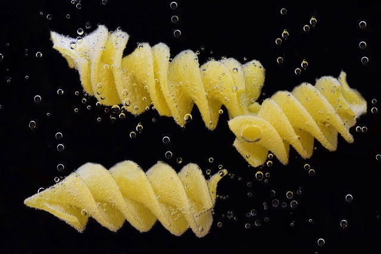
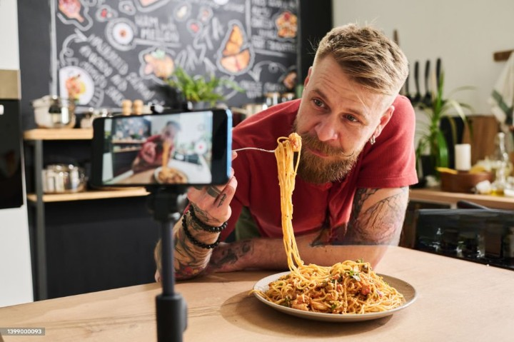

What we do

We Introduce new recipes for every weekend which can turn it into next level.

Make detailed videos on recipes with amazing tricks that can make cooking whole lot of fun.
Answers to all your queries related to recipes on FAQ section on our website, locate shops nearby yop

Sharing good memories with our best customers by just following simple steps to be the lucky one.